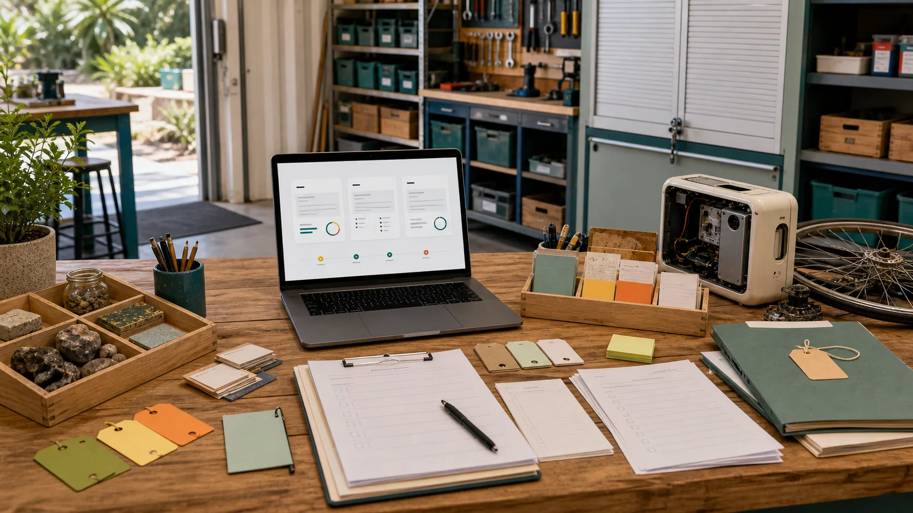

1. Name the space
Input the room, bench, garden, capsule, device cluster or private place. Output a clear scene anchor.
Level 0 (L0) is the first circle: a room, desk, studio, garden bed, capsule, phone, local server, private object or support space. You choose the details. The builder turns those choices into a scene prompt.

Fill these in and the builder outputs a prompt for your room, object, device, capsule, bench or private support scene.
Input the room, bench, garden, capsule, device cluster or private place. Output a clear scene anchor.
Input render, object mock-up, room layout, capsule interior, repair bench or private simulation. Output the right prompt type.
Input the details you keep on your side: health context, identity, routines, family notes or raw sensor streams. Output a prompt that leaves them out.
Input the people you trust to tune it with you. Output a shared tuning path you control.
Input the small version you are happy to show later. Output a shareable render or layout prompt.
Input a new camera, scale, detail level or source date. Output an updated prompt packet.
The Aura security notes and capsule compute pages point to a simple ownership idea: a digital twin is a support layer you wear, tune and remove. It helps prepare renders, memory prompts, summaries and external simulation briefs without becoming your identity.
A small-device scene showing local storage, soft status lights and owner-controlled sync without exposing live data.
A quiet rest pod render with your privacy, comfort, heat, power and data choices before any idle compute is routed elsewhere.
Input tools, parts and training needs. Output a bench scene with repair flow and private details removed.
A private support visual that separates logistics from clinical advice and keeps raw health information out of shared renders.